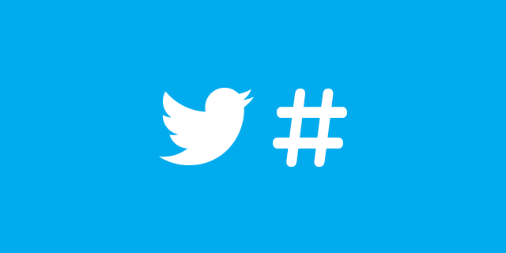

twitter運用の仕方
こんにちは。ぽてっとです。
今回はtwitterを運用していて、わかったことをまとめていきたいと思います。。下記にロードマップを用意しました。
- 1：ハッシュタグを活用
- 2：毎日投稿
- 3：プロフィールを意識
上記のことについて、話していきます。
1：ハッシュタグを活用

ハッシュタグをうまく活用していくとフォロワーが増えます。
僕の場合、＃ブログ初心者 ＃ブログ初心者と繋がりたい というタグをうまく使いこなしました。
上記のように自分の興味のある分野の人たちが集まるタグを使うべきです。そうすることで、ファンが増えタグをつけなくても、いいねされるようになったら進歩している証です。
2：毎日投稿
毎日投稿をすることでファンが増え、いいねも比例して増えることで、自分のやる気（モチベ）にも繋がります。
僕の場合、お風呂に入っている隙間時間に1投稿するようにしています。
毎日の隙間時間に投稿することを習慣化することを意識していくべきです。
3：プロフィールを意識
自分の憧れている人のプロフィールを見てみてください。胡散臭くなく、人柄が出ていると思います。プロフィール欄は、自分を曝け出しましょう！
twitterの方でいい情報を発信していきたいと思いますので、是非フォローお願いします。
この記事は以上です。ここまでみてくださり、ありがとうございました😊